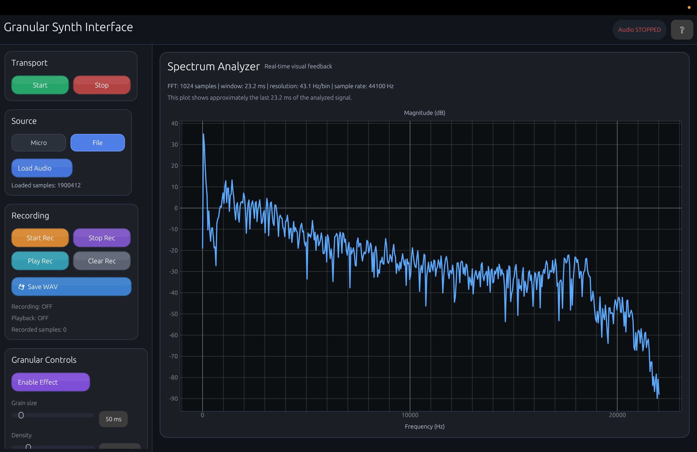

Analyse de spectre
Visualisation en temps réel du contenu fréquentiel du signal audio grâce à une FFT optimisée.
Un analyseur de spectre temps réel couplé à un moteur de synthèse granulaire, développé dans le cadre du projet de semestre EPITA.

Une chaîne audio complète : de l’entrée du signal jusqu’à la visualisation et à la transformation sonore.
Visualisation en temps réel du contenu fréquentiel du signal audio grâce à une FFT optimisée.
Manipulation créative du son par grains : taille, densité, hauteur, pour explorer de nouvelles textures.
Contrôles clairs, retour visuel immédiat et expérience fluide pour l’utilisateur.